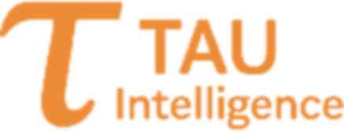
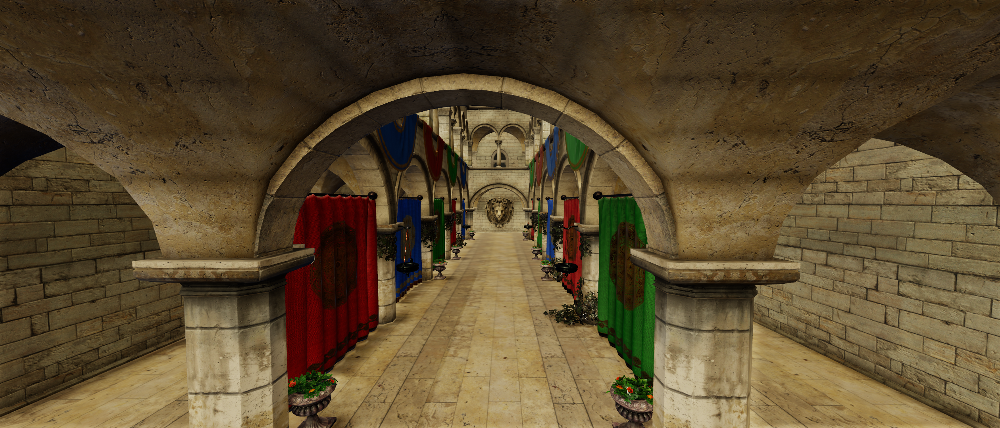
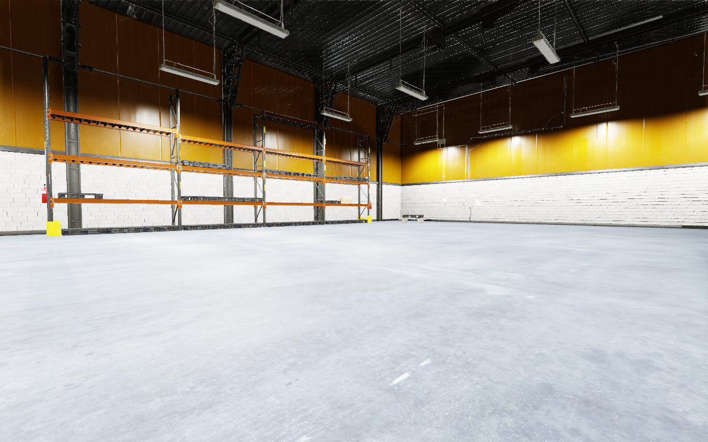
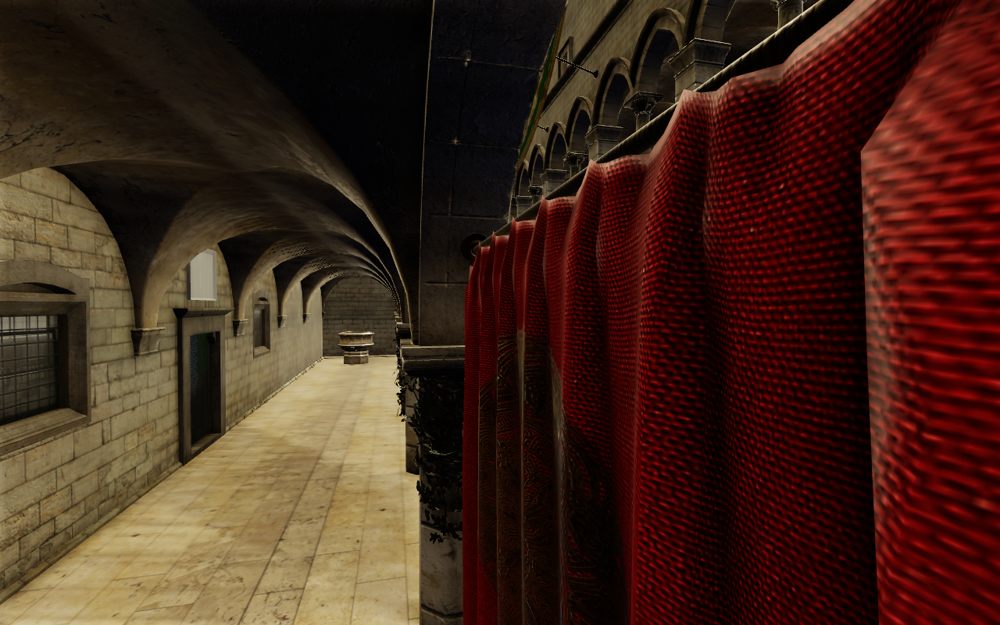
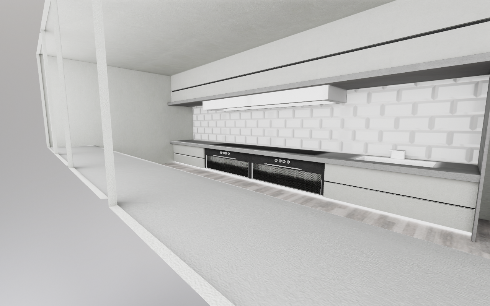
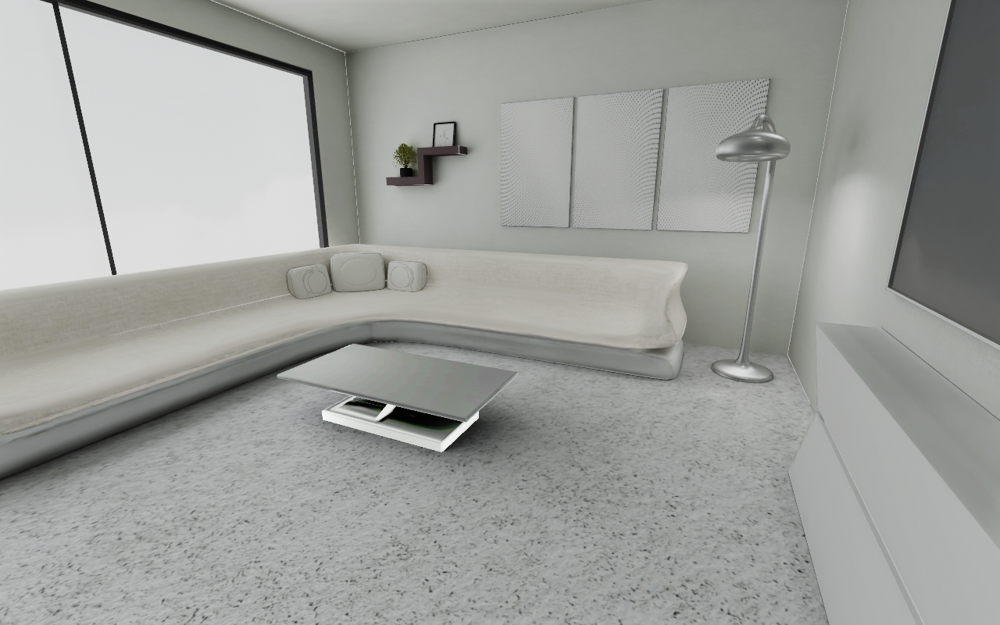
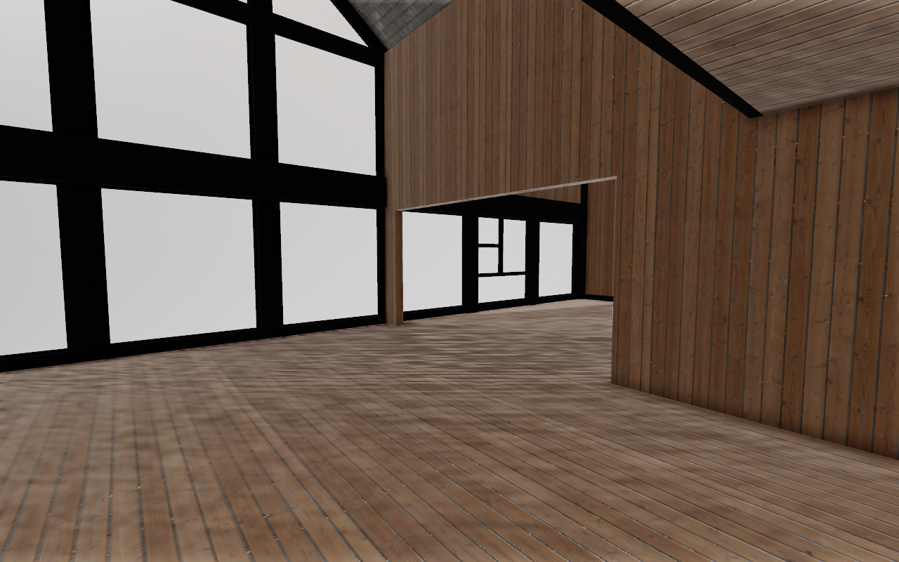
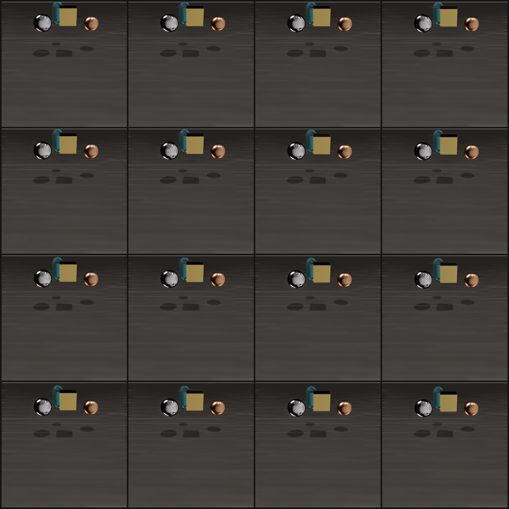

Watch
MuJoFil in motion.
The cinematic walkthrough: environments, the renderer and the pipeline.



MuJoFil turns a GPU-resident physics simulation into photoreal training observations, using a parallel rasterization renderer forked from Google Filament. Drop in any environment and train your robot's policy inside it.
One pipeline that gives a parallel robot simulation the eyes it never had.
MuJoFil drives a purpose-built, GPU-parallel rasterization renderer, forked from Google Filament, on top of a GPU-resident physics simulation. You get fast parallel dynamics and genuinely photoreal frames from the same loop, ready for your policy network. No offline rendering, no second machine, no compromise between speed and looks.
The renderer, the parallel batch path, and the training-ready observation pipeline are what make MuJoFil: together they do something a standard robotics simulator cannot, loading a real 3D environment and lighting it with full PBR, image-based lighting, soft shadows and reflections, all in one parallel GPU pass.
High fidelity on hardware you already own. Ray-traced stacks like Omniverse demand high-end RTX cards. MuJoFil delivers photoreal PBR on a mid-range GPU by rendering through an efficient rasterization pipeline, so realistic vision-RL is no longer gated behind datacenter hardware.
One step of the loop, end to end.
Thousands of parallel MuJoCo worlds advance entirely on the GPU as CUDA kernels.
A forked Filament GL backend draws every world in a single gl_Layer pass, with full PBR, IBL, shadows and reflections.
Frames land in GPU memory as torch.cuda tensors, ready for a CNN, ViT or VLA policy.
A forked Filament GL backend renders many worlds in one instanced draw with per-world GPU transforms, parallel by construction rather than a per-world Python loop.
Metalness and roughness PBR, image-based lighting, soft shadows, SSAO, bloom, screen-space reflections and filmic tone mapping: the appearance cues flat renderers lack.
Quality presets trade fidelity for throughput with one keyword, the renderer keeps pixels on the GPU, and observations arrive as PyTorch tensors with no detour.
A standard robotics simulator cannot load real 3D scenes. MuJoFil can. Pull a model from Sketchfab, Poly Haven or any glTF, GLB, OBJ or USD source and train your robot's policy inside a photoreal world, with an optional tool that auto-generates the collision mesh so the robot actually interacts with the geometry.
The renders on this page are all produced by MuJoFil, fresh: Intel Sponza, an industrial warehouse, a modern living room, a café and an art gallery.

Every frame below is the actual renderer output: full PBR, image-based lighting, real reflections.





The cinematic walkthrough: environments, the renderer and the pipeline.
Your code imports only mujofil. The physics and the renderer are driven for you.
# one self-contained wheel, an NVIDIA GPU is all you need
$ pip install mujofilimport mujofil
# GPU physics plus photoreal rendering, one object
scene = mujofil.ParallelScene(
"scene.xml", num_worlds=32,
width=256, height=256, preset="high")
for _ in range(100):
scene.step() # GPU physics
obs = scene.render(camera=0) # (32,256,256,4) torch.cudaWhat you get out of the box.
Photoreal observations as PyTorch tensors, ready for a CNN, ViT or VLA policy. Quality presets (high, fast, train and more) trade fidelity for throughput with one keyword. Any environment via the optional [usd] tooling that converts a GLB or USD scene into a visual mesh plus a MuJoCo collision body.
The wheel is self-contained: Filament and the CUDA runtime are baked in. The only runtime requirement is an NVIDIA GPU and driver. Linux x86-64, Python 3.10 to 3.13.